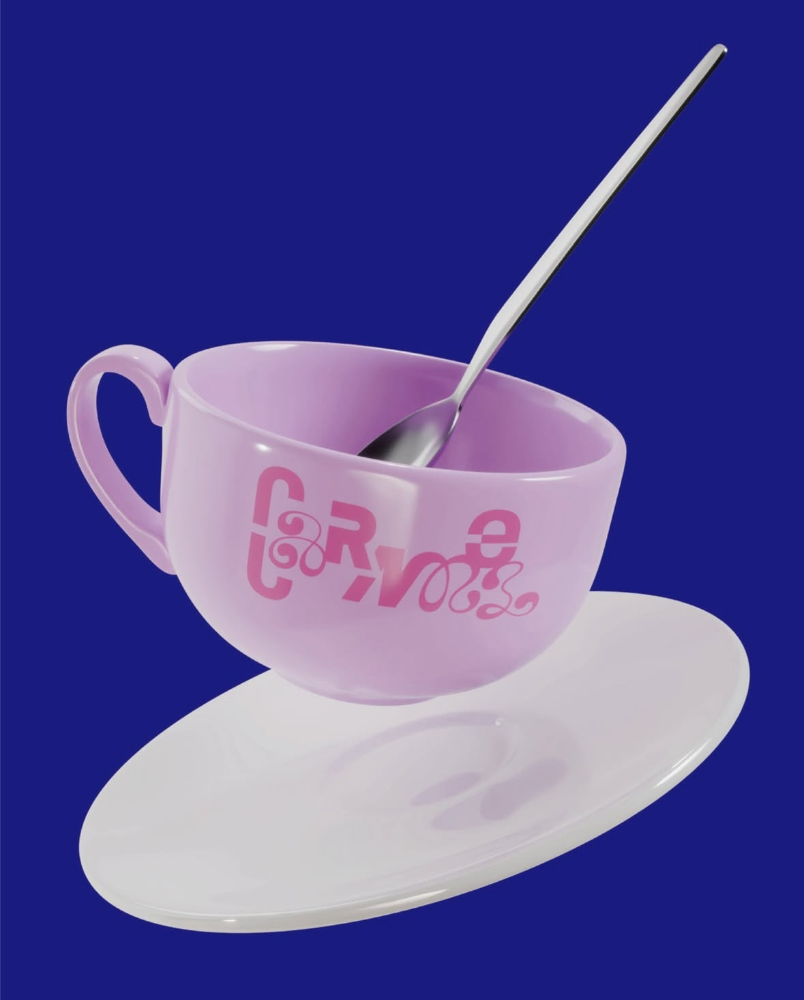
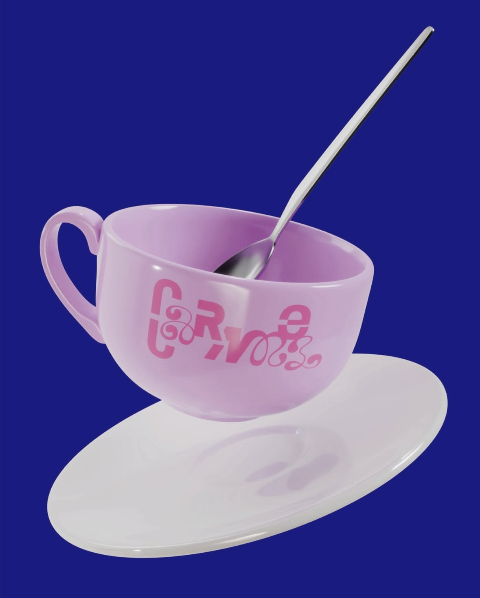
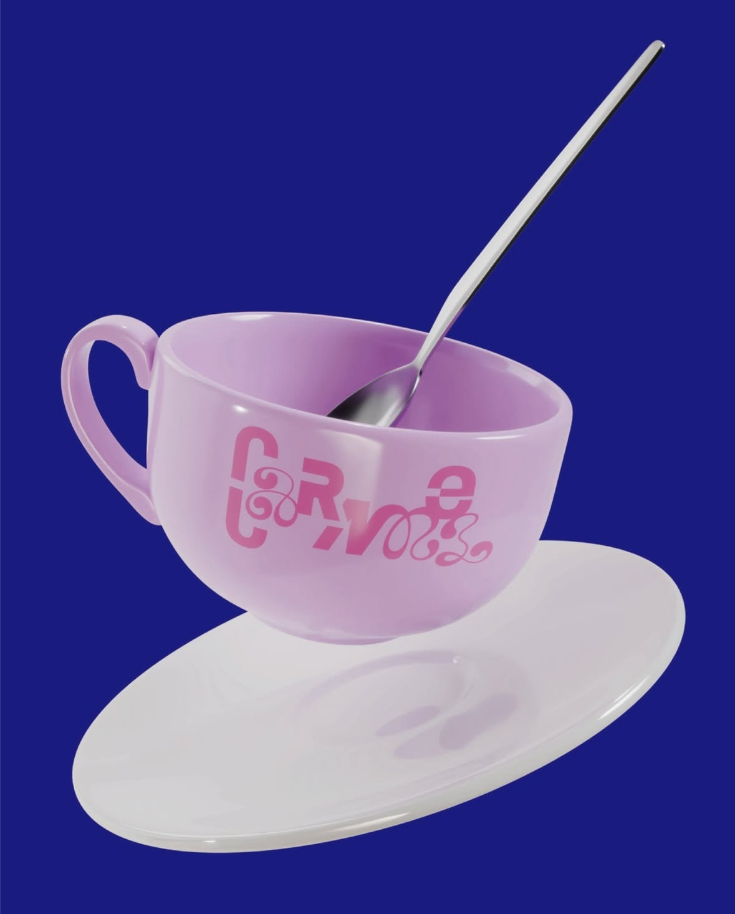
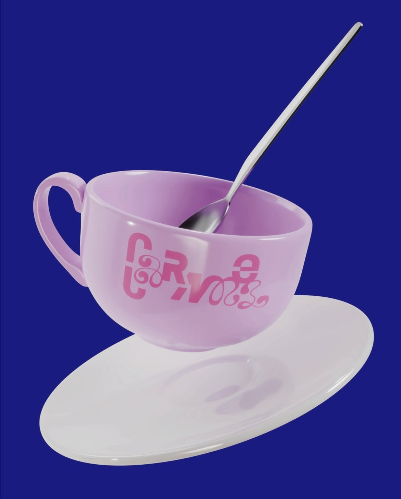

«Caramel»
레터링, 2024
곡 속의 Caramel은 달콤하지만, 일시적인 사랑을 상징한다. 부드럽고 날카로운 글자를 혼용하여 사랑의 이중성을, 높낮이의 변화를 통해 예측 불가능하고 복잡한 사랑을 표현했다.
워크숍 지도 / 김현진
도움 / 석재원
3D 그래픽 / 정우성
레터링 / 박정빈
발행 / AABB 서울시 마포구 와우산로21길 10, 5층
«Caramel»
Lettering, 2024
Caramel in the song symbolizes a sweet but transient love. The duality of love is expressed by mixing soft and sharp letters, and the unpredictability and complexity of love is expressed through the change of height and depth.